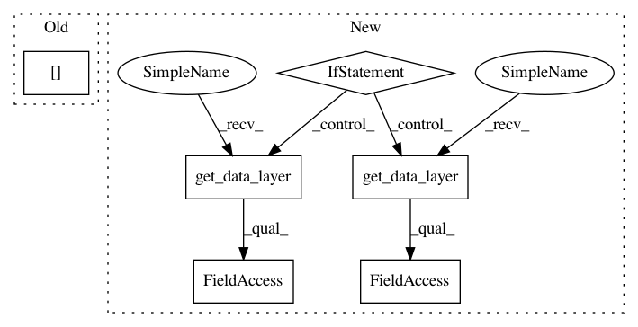

0093fa5762122466087782c75b698429776ad49e,open_seq2seq/models/text2speech.py,Text2Speech,finalize_inference,#Text2Speech#Any#Any#,341
Before Change
save_format="disk"
)
dict_to_log["audio"] = wav_summary
After Change
)
if audio_length > 2:
if "both" in self.get_data_layer().params["output_type"]:
predicted_mag_spec = output_values[5][j][:audio_length - 1, :]
wav_summary = save_audio(
predicted_mag_spec,
self.params["logdir"],
0,
n_fft=self.get_data_layer().n_fft,
sampling_rate=self.get_data_layer().sampling_rate,
mode="infer_mag",
number=i * batch_size + j,
save_format="disk",
)
predicted_final_spec = predicted_final_spec[:audio_length - 1, :]
predicted_final_spec = self.get_data_layer().get_magnitude_spec(predicted_final_spec, is_mel=True)
wav_summary = save_audio(
predicted_final_spec,
In pattern: SUPERPATTERN
Frequency: 3
Non-data size: 6
Instances
Project Name: NVIDIA/OpenSeq2Seq
Commit Name: 0093fa5762122466087782c75b698429776ad49e
Time: 2018-09-23
Author: jasonli9@live.ca
File Name: open_seq2seq/models/text2speech.py
Class Name: Text2Speech
Method Name: finalize_inference
Project Name: NVIDIA/OpenSeq2Seq
Commit Name: 0093fa5762122466087782c75b698429776ad49e
Time: 2018-09-23
Author: jasonli9@live.ca
File Name: open_seq2seq/models/text2speech.py
Class Name: Text2Speech
Method Name: finalize_inference
Project Name: NVIDIA/OpenSeq2Seq
Commit Name: a7b27761c6f02686135d9af83a300f23cb8d71ab
Time: 2018-10-10
Author: vlavrukhin@nvidia.com
File Name: open_seq2seq/models/speech2text.py
Class Name: Speech2Text
Method Name: evaluate
Project Name: NVIDIA/OpenSeq2Seq
Commit Name: a7b27761c6f02686135d9af83a300f23cb8d71ab
Time: 2018-10-10
Author: vlavrukhin@nvidia.com
File Name: open_seq2seq/models/speech2text.py
Class Name: Speech2Text
Method Name: maybe_print_logs